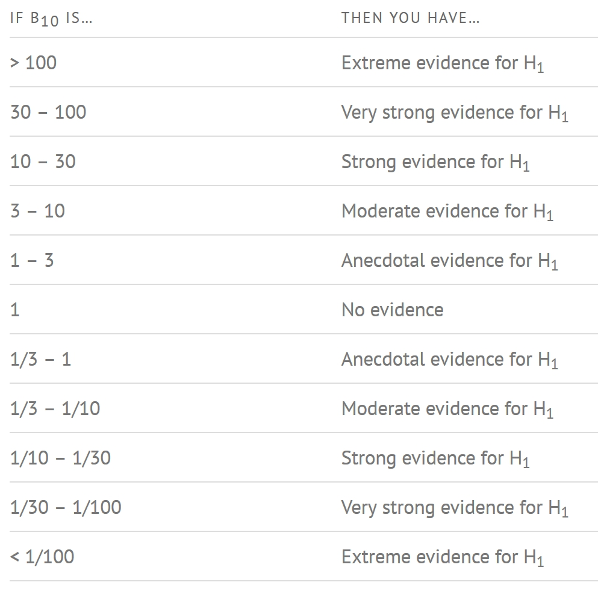
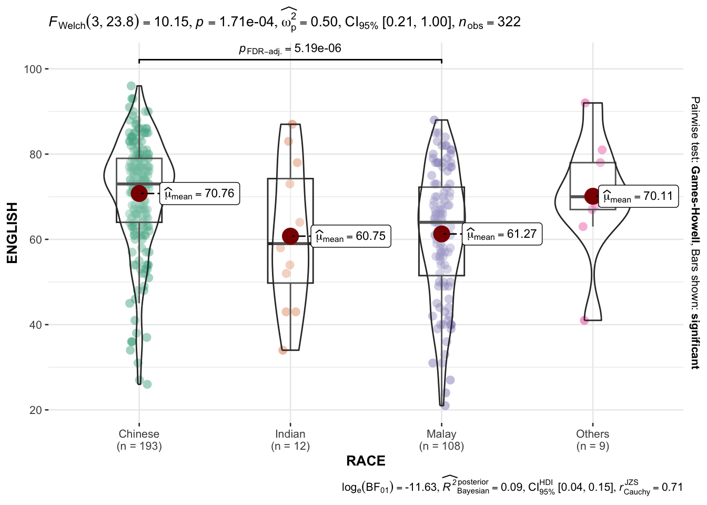
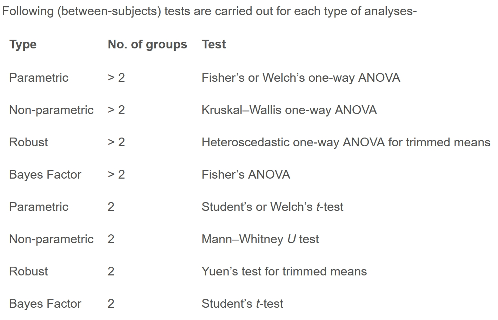
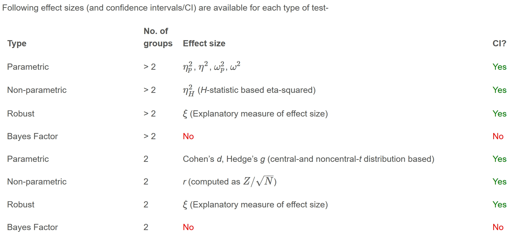
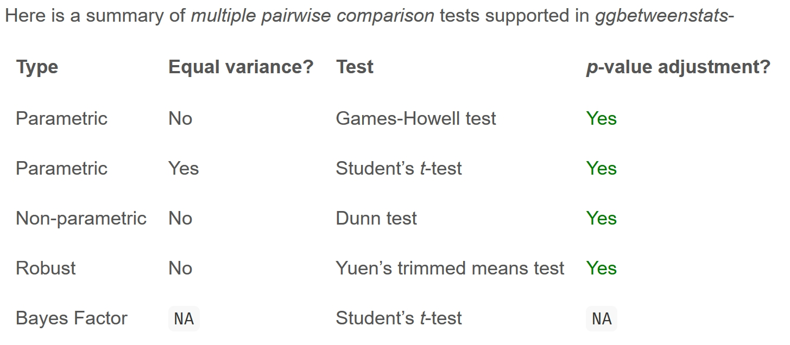
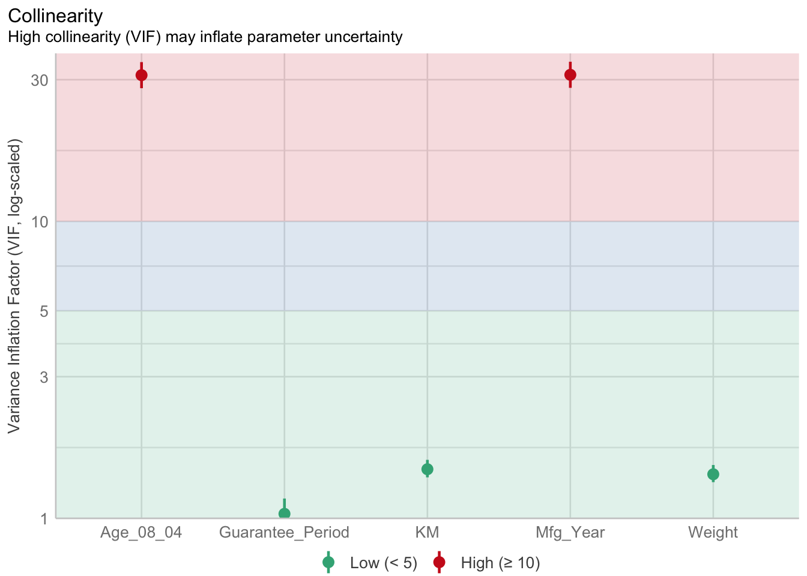
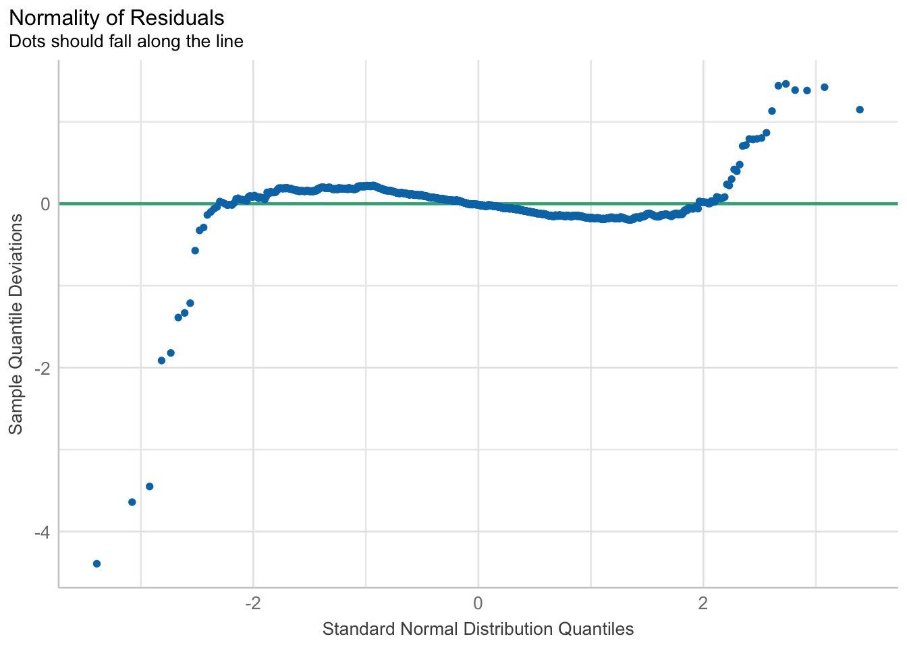
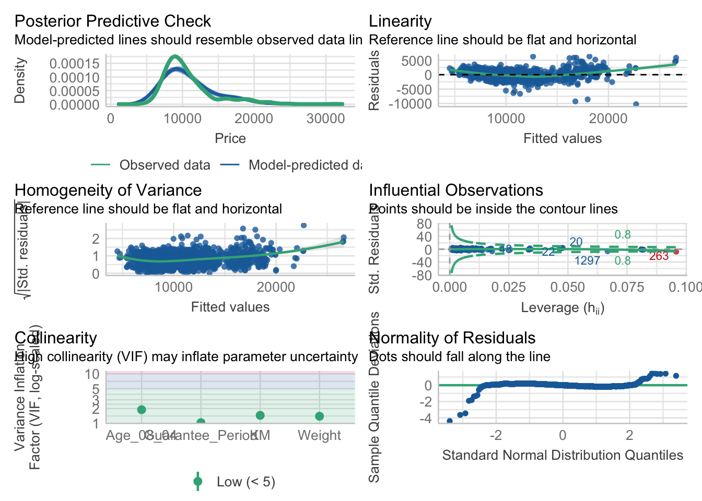
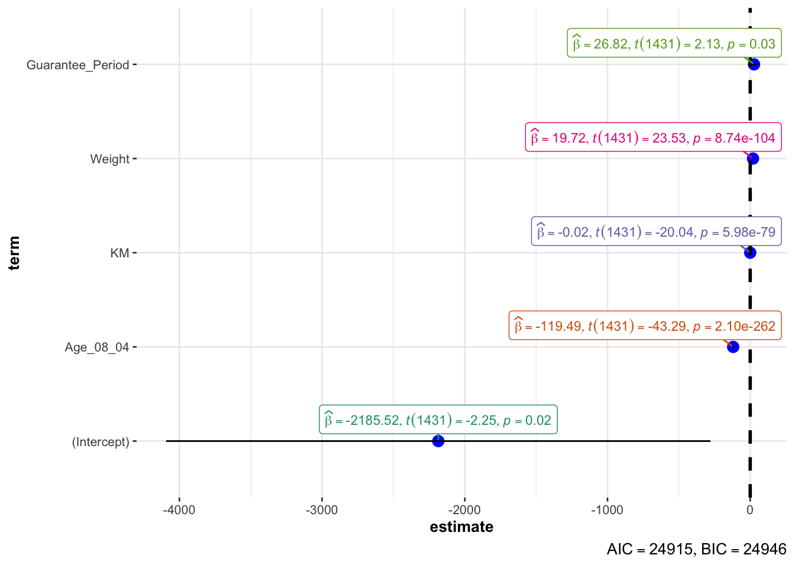

pacman::p_load(tidyverse, ggstatsplot, rstantools)
# Set seed
set.seed(1234)Hands-on Exercise 4A: Visualizing Statistical Analysis
1 Overview
This hands-on exercise covers Chapter 10: Visual Statistical Analysis.
I learned about the following:
- creating visual graphics with rich statistical information
2 Getting Started
2.1 Loading the required packages
For this exercise we will use the following R packages:
tidyverse, a family of modern R packages specially designed to support data science, analysis and communication task including creating static statistical graphs.
ggstatsplot, extension of ggplot2 package for creating graphics with details from statistical tests included in the information-rich plots themselves.
rstantools, interfaces with Stan for statistical modeling and high-performance statistical computation
2.2 Loading the data
We will use the same exam_data dataset from Hands-on Ex 1 and load it into the RStudio environment using read_csv().
exam_data <- read_csv("data/Exam_data.csv")
glimpse(exam_data)Rows: 322
Columns: 7
$ ID <chr> "Student321", "Student305", "Student289", "Student227", "Stude…
$ CLASS <chr> "3I", "3I", "3H", "3F", "3I", "3I", "3I", "3I", "3I", "3H", "3…
$ GENDER <chr> "Male", "Female", "Male", "Male", "Male", "Female", "Male", "M…
$ RACE <chr> "Malay", "Malay", "Chinese", "Chinese", "Malay", "Malay", "Chi…
$ ENGLISH <dbl> 21, 24, 26, 27, 27, 31, 31, 31, 33, 34, 34, 36, 36, 36, 37, 38…
$ MATHS <dbl> 9, 22, 16, 77, 11, 16, 21, 18, 19, 49, 39, 35, 23, 36, 49, 30,…
$ SCIENCE <dbl> 15, 16, 16, 31, 25, 16, 25, 27, 15, 37, 42, 22, 32, 36, 35, 45…There are a total of seven attributes in the exam_data tibble data frame. Four of them are categorical data type and the other three are in continuous data type.
The categorical attributes are:
ID,CLASS,GENDERandRACE.The continuous attributes are:
MATHS,ENGLISHandSCIENCE.
3 Statistical Functions with ggplot2
3.1 One-sample test: gghistostats() method
In the code chunk below, gghistostats() is used to to build an visual of one-sample test on English scores.
gghistostats(
data = exam_data,
x = ENGLISH,
type = "bayes",
test.value = 60,
xlab = "English scores"
)
The default information included are: - statistical details - Bayes Factor - sample sizes - distribution summary.
3.2 Unpacking the Bayes Factor
A Bayes factor is the ratio of the likelihood of one particular hypothesis to the likelihood of another. It can be interpreted as a measure of the strength of evidence in favor of one theory among two competing theories.
That’s because the Bayes factor gives us a way to evaluate the data in favor of a null hypothesis, and to use external information to do so. It tells us what the weight of the evidence is in favor of a given hypothesis.
When we are comparing two hypotheses, H1 (the alternate hypothesis) and H0 (the null hypothesis), the Bayes Factor is often written as B10. It can be defined mathematically as
\[ \frac{likelihood\ of\ data\ given H_1}{likelihood\ of\ data\ given H_0} = \frac{P(D|H_1)}{P(D|H_0)} \]
- The Schwarz criterion is one of the easiest ways to calculate rough approximation of the Bayes Factor.
3.3 How to interpret Bayes Factor
A Bayes Factor can be any positive number. One of the most common interpretations is this one—first proposed by Harold Jeffereys (1961) and slightly modified by Lee and Wagenmakers in 2013:

3.4 Two-sample mean test: ggbetweenstats()
In the code chunk below, ggbetweenstats() is used to build a visual for two-sample mean test of Maths scores by gender.
ggbetweenstats(
data = exam_data,
x = GENDER,
y = MATHS,
type = "np",
messages = FALSE
)
The default information included are: - statistical details - Bayes Factor - sample sizes - distribution summary
3.5 Oneway ANOVA Test: ggbetweenstats() method
In the code chunk below, ggbetweenstats() is used to build a visual for One-way ANOVA test on English score by race.
ggbetweenstats(
data = exam_data,
x = RACE,
y = ENGLISH,
type = "p",
mean.ci = TRUE,
pairwise.comparisons = TRUE,
pairwise.display = "s",
p.adjust.method = "fdr",
messages = FALSE
)
“ns” → only non-significant
“s” → only significant
“all” → everything
3.5.1 Summary of tests



3.6 Significant Test of Correlation: ggscatterstats()
In the code chunk below, ggscatterstats() is used to build a visual for Significant Test of Correlation between Maths scores and English scores.
ggscatterstats(
data = exam_data,
x = MATHS,
y = ENGLISH,
marginal = FALSE,
)
3.7 Significant Test of Association (Depedence) : ggbarstats() methods
In the code chunk below, the Maths scores is binned into a 4-class variable by using cut().
exam_binned <- exam_data %>%
mutate(MATHS_bins =
cut(MATHS,
breaks = c(0,60,75,85,100))
)In this code chunk below ggbarstats() is used to build a visual for Significant Test of Association.
ggbarstats(exam_binned,
x = MATHS_bins,
y = GENDER)
4 Setting up for Visualizations
From this section, we will learn how to visualise model diagnostic and model parameters by using parameters package.
- Toyota Corolla case study will be used. The purpose of study is to build a model to discover factors affecting prices of used-cars by taking into consideration a set of explanatory variables.
4.1 Loading the required packages
We will load additional packages:
pacman::p_load(readxl, performance, parameters, see)4.2 Importing Excel file: readxl methods
In the code chunk below, read_xls() of readxl package is used to import the data worksheet of ToyotaCorolla.xls workbook into R.
car_resale <- read_xls("data/ToyotaCorolla.xls",
"data")
glimpse(car_resale)Rows: 1,436
Columns: 38
$ Id <dbl> 81, 1, 2, 3, 4, 5, 6, 7, 8, 44, 45, 46, 47, 49, 51, 6…
$ Model <chr> "TOYOTA Corolla 1.6 5drs 1 4/5-Doors", "TOYOTA Coroll…
$ Price <dbl> 18950, 13500, 13750, 13950, 14950, 13750, 12950, 1690…
$ Age_08_04 <dbl> 25, 23, 23, 24, 26, 30, 32, 27, 30, 27, 22, 23, 27, 2…
$ Mfg_Month <dbl> 8, 10, 10, 9, 7, 3, 1, 6, 3, 6, 11, 10, 6, 11, 11, 11…
$ Mfg_Year <dbl> 2002, 2002, 2002, 2002, 2002, 2002, 2002, 2002, 2002,…
$ KM <dbl> 20019, 46986, 72937, 41711, 48000, 38500, 61000, 9461…
$ Quarterly_Tax <dbl> 100, 210, 210, 210, 210, 210, 210, 210, 210, 234, 234…
$ Weight <dbl> 1180, 1165, 1165, 1165, 1165, 1170, 1170, 1245, 1245,…
$ Guarantee_Period <dbl> 3, 3, 3, 3, 3, 3, 3, 3, 3, 3, 3, 3, 3, 3, 3, 3, 3, 3,…
$ HP_Bin <chr> "100-120", "< 100", "< 100", "< 100", "< 100", "< 100…
$ CC_bin <chr> "1600", ">1600", ">1600", ">1600", ">1600", ">1600", …
$ Doors <dbl> 5, 3, 3, 3, 3, 3, 3, 3, 3, 5, 5, 5, 5, 5, 5, 5, 3, 3,…
$ Gears <dbl> 5, 5, 5, 5, 5, 5, 5, 5, 5, 5, 5, 5, 5, 5, 5, 5, 5, 5,…
$ Cylinders <dbl> 4, 4, 4, 4, 4, 4, 4, 4, 4, 4, 4, 4, 4, 4, 4, 4, 4, 4,…
$ Fuel_Type <chr> "Petrol", "Diesel", "Diesel", "Diesel", "Diesel", "Di…
$ Color <chr> "Blue", "Blue", "Silver", "Blue", "Black", "Black", "…
$ Met_Color <dbl> 1, 1, 1, 1, 0, 0, 0, 1, 1, 0, 0, 0, 1, 1, 1, 1, 1, 1,…
$ Automatic <dbl> 1, 0, 0, 0, 0, 0, 0, 0, 0, 0, 0, 0, 0, 0, 0, 0, 0, 0,…
$ Mfr_Guarantee <dbl> 0, 0, 0, 1, 1, 1, 0, 0, 1, 1, 1, 0, 0, 1, 1, 1, 0, 1,…
$ BOVAG_Guarantee <dbl> 0, 1, 1, 1, 1, 1, 1, 1, 1, 1, 1, 1, 1, 1, 1, 1, 1, 1,…
$ ABS <dbl> 1, 1, 1, 1, 1, 1, 1, 1, 1, 1, 1, 1, 1, 1, 1, 1, 1, 1,…
$ Airbag_1 <dbl> 1, 1, 1, 1, 1, 1, 1, 1, 1, 1, 1, 1, 1, 1, 1, 1, 1, 1,…
$ Airbag_2 <dbl> 1, 1, 1, 1, 1, 1, 1, 1, 1, 1, 1, 1, 1, 1, 1, 1, 1, 1,…
$ Airco <dbl> 1, 0, 1, 0, 0, 1, 1, 1, 1, 1, 1, 1, 1, 1, 1, 1, 1, 1,…
$ Automatic_airco <dbl> 1, 0, 0, 0, 0, 0, 0, 0, 0, 0, 0, 1, 0, 0, 0, 1, 0, 1,…
$ Boardcomputer <dbl> 0, 1, 1, 1, 1, 1, 1, 1, 1, 1, 1, 1, 1, 1, 1, 1, 1, 1,…
$ CD_Player <dbl> 1, 0, 1, 0, 0, 0, 0, 0, 1, 0, 0, 0, 1, 0, 1, 1, 1, 1,…
$ Central_Lock <dbl> 1, 1, 1, 0, 0, 1, 1, 1, 1, 1, 1, 1, 1, 1, 1, 1, 1, 1,…
$ Powered_Windows <dbl> 1, 1, 0, 0, 0, 1, 1, 1, 1, 1, 1, 1, 1, 1, 1, 1, 1, 1,…
$ Power_Steering <dbl> 1, 1, 1, 1, 1, 1, 1, 1, 1, 1, 1, 1, 1, 1, 1, 1, 1, 1,…
$ Radio <dbl> 0, 0, 0, 0, 0, 0, 0, 0, 0, 0, 0, 0, 0, 0, 0, 0, 0, 0,…
$ Mistlamps <dbl> 0, 0, 0, 0, 0, 1, 1, 0, 0, 0, 0, 0, 0, 0, 0, 0, 0, 0,…
$ Sport_Model <dbl> 0, 0, 0, 0, 0, 0, 0, 1, 0, 1, 1, 0, 1, 1, 1, 1, 1, 1,…
$ Backseat_Divider <dbl> 0, 1, 1, 1, 1, 1, 1, 1, 1, 1, 1, 1, 1, 1, 1, 1, 1, 1,…
$ Metallic_Rim <dbl> 0, 0, 0, 0, 0, 0, 0, 0, 0, 0, 0, 0, 0, 0, 0, 0, 0, 0,…
$ Radio_cassette <dbl> 0, 0, 0, 0, 0, 0, 0, 0, 0, 0, 0, 0, 0, 0, 0, 0, 0, 0,…
$ Tow_Bar <dbl> 0, 0, 0, 0, 0, 0, 0, 0, 0, 0, 0, 0, 0, 0, 0, 0, 0, 0,…5 Model Visualization
5.1 Multiple Regression Model using lm()
The code chunk below is used to calibrate a multiple linear regression model by using lm() of Base Stats of R.
model <- lm(Price ~ Age_08_04 + Mfg_Year + KM +
Weight + Guarantee_Period, data = car_resale)
model
Call:
lm(formula = Price ~ Age_08_04 + Mfg_Year + KM + Weight + Guarantee_Period,
data = car_resale)
Coefficients:
(Intercept) Age_08_04 Mfg_Year KM
-2.637e+06 -1.409e+01 1.315e+03 -2.323e-02
Weight Guarantee_Period
1.903e+01 2.770e+01 5.2 Model Diagnostic: checking for multicolinearity
In the code chunk, check_collinearity() of performance package.
check_collinearity(model)# Check for Multicollinearity
Low Correlation
Term VIF VIF 95% CI Increased SE Tolerance Tolerance 95% CI
KM 1.46 [ 1.37, 1.57] 1.21 0.68 [0.64, 0.73]
Weight 1.41 [ 1.32, 1.51] 1.19 0.71 [0.66, 0.76]
Guarantee_Period 1.04 [ 1.01, 1.17] 1.02 0.97 [0.86, 0.99]
High Correlation
Term VIF VIF 95% CI Increased SE Tolerance Tolerance 95% CI
Age_08_04 31.07 [28.08, 34.38] 5.57 0.03 [0.03, 0.04]
Mfg_Year 31.16 [28.16, 34.48] 5.58 0.03 [0.03, 0.04]We can also plot the function result
check_c <- check_collinearity(model)
plot(check_c)
5.3 Model Diagnostic: checking normality assumption
In the code chunk, check_normality() of performance package.
model1 <- lm(Price ~ Age_08_04 + KM +
Weight + Guarantee_Period, data = car_resale)check_n <- check_normality(model1)plot(check_n)
5.4 Model Diagnostic: Check model for homogeneity of variances
In the code chunk, check_heteroscedasticity() of performance package.
check_h <- check_heteroscedasticity(model1)plot(check_h)
5.5 Model Diagnostic: Complete check
We can also perform the complete by using check_model().
check_model(model1)
5.6 Visualising Regression Parameters: see methods
plot(parameters(model1))
5.7 Visualising Regression Parameters: ggcoefstats() methods
In the code below, ggcoefstats() of ggstatsplot package to visualise the parameters of a regression model.
ggcoefstats(model1,
output = "plot")
6 Reflections
It’s great that there are functions to visualizing statistics as from the past exercises, it was such a chore to add even a simple reference line based on median/average, i.e., figure out how to do the stat, render it, annotate. What more for more advanced stats?
I ran into issues installing see package in my first attempt (late in the night) to complete this exercise so I investigated the issue the next day when my mind is clearer. It turns out new version of R and RStudio were released yesterday which made my current installs incompatible with the new package versions. I shared my findings on https://piazza.com/class/luiwwx5xp1e4ay/post/48. I realized that some R packages may be backward incompatible.